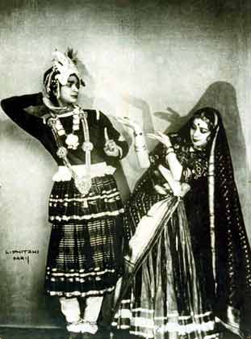
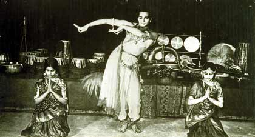
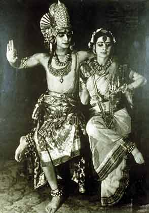
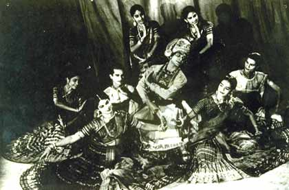
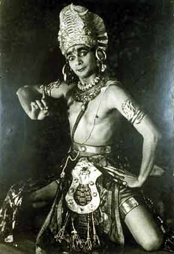
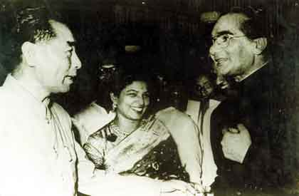
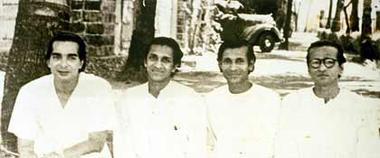
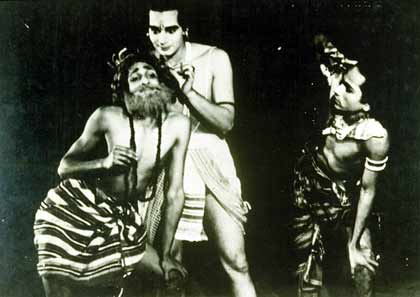

|
|
Uday Shankar―the choreographer par excellence: A pictorial view
A.H. Jaffor Ullah
I learned about the most celebrated Bangalee dancer, Uday
Shankar, and his troupe when I was growing up in the fifties from my two elder
sisters and my father. They used to speak of the choreographer, Uday Shankar,
almost in reverence. Many years had past by since I heard the encomiums on
Uday and his youngest brother Ravi Shankar for their dancing and sitar
virtuoso, respectively. It is even surprising that Ravindra Shankar, the
original name of Ravi Shankar, was both a dancer and an Esraj player in Uday’s
troupe in the 1930s. More on that later. Let me however relate to you an
incidence that had invoked my interest in Uday Shankar.

Uday with Simkie in
dance Rasa Leela ca. 1931-32
In the summer of 1975, I was at Stony Brook, Long Island,
New York where I was doing my first postdoctoral work at the Biochemistry
Department of SUNY. Some Bangalees working at the nearby Brookhaven National
Lab had arranged a performance of “Tasher Desh” by Rabitirtha, a cultural
organization from Kolkata under the able leadership of Ms. Suchitra Mitra — a
leading exponent of Rabindra Sangeet in those days. There was nothing
exciting going on in Long Island in the dead of the summer in eastern Long
Island, which was considered than a wasteland as far as culture goes.
Therefore, the news of the performance of Tagore’s “Tasher Desh” was music to
my ear. It was on a weekend, late in the afternoon, the performance was being
held at the auditorium of the Brookhaven National Lab. A small crowd of about
250-300 people, mostly American, had milled to watch the dance drama “Tasher
Desh” (A World of Playing Cards). Rabitirtha was a cultural organization
based in Kolkata that had received glowing encomiums everywhere for their
interpretation of many dance dramas of Rabindranath Tagore. Therefore, I felt
I was lucky to see a live performance of “Tasher Desh” (The land of cards)
done by such a celebrated dance troupe. Of course, at the helm was none other
than Ms. Suchitra Mitra, who was in her late forties or early fifties in those
days. Her tastes and temperament were very modern. Her hair was styled
according to western style; nonetheless, she wore a beautiful sari. She gave
the introduction of Tagore’s dance drama in perfect Indianized British accent,
which was understandable by most attendees. The music accompanying the drama
was done live. That added a zest to the play. The performance was so good
that we all gave a standing ovation.

Uday performing with
Amala (left) and cousin Kanak Lata (right) in 1932
During the intermission, we all gathered outside the
auditorium on the hallway and chitchatted with the musicians. I remember
talking to Ms. Suchitra Mitra as I congratulated for bringing her troupe to
outside world. On learning that I am from Dhaka, she told me that her troupe
had performed Tagore’s dance drama “Chitranggada” in 1972 perhaps on December
1972. Both Sheikh Mujibur Rahman, the founder of Bangladesh, and Indira
Gandhi, the Prime Minister of India at the time, were present at the recital.
I was lucky enough to obtain a photo from the Internet that shows Suchitra
Mitra and her troupe along with Sheikh Mujibur Rahman and Indira Gandhi at the
end of the performance. [Attach Photo Here]. It was only 3 years after the
performance of Rabitirtha’s Chitranggada in Dhaka that Ms. Mitra was
reminiscing the event. It was nice to hear about the history-making
performance, which I heard about but could not have attended. Ms. Mitra was
in hot demand; many Americans wanted to say hello to her, therefore, I had to
let go her. A percussionist of Rabitirtha then made his acquaintance with
me. He became excited knowing that I was from Sylhet. The tabalchi
(percussionist) himself was from Sylhet, a man in his mid forties, struck a
conversation with me. Among other things, he told me that he plays tabla
taranga and other percussion instruments for the celebrated music director
R.D. Burman. Then he told me that he joined the dance troupe of Uday Shankar
in the late 1940s being a teenage. There he met a very bright Bangalee boy
from Chittagong. He said that the boy who was also his age was a very
talented dancer who joined Uday Shankar’s school without the consent of his
parents. The Chittagonian boy returned to his home sometime in 1948-1949. I
knew immediately whom he was talking about. I said, “Is this Bulbul Chowdhury?”
“Yes, this was him,” was the reply. We then briefly chitchatted centering on
the short life of Bulbul Chowdhury. Bulbul joined Uday’s school of modern
dance because that was the best thing one could have done if he or she liked
modern dance at the time. Upon his return to East Pakistan he started a
school of dancing somewhere in Old Dhaka. Unfortunately, he died very
prematurely. Many of his students continued to learn dancing from other
teachers but they named the school “Bulbul Academy of Fine Arts” or “BAFA.”
In Bangla, we knew the school as “Bulbul Lalit Kola Academy.” I was thrilled
to make an acquaintance to a person who knew Bulbul Chowdhury so well. Bulbul
was from Chittagong district, a very conservative place. It is something else
to come out of a conservative place or family and then to join the most
avant-garde dance school in India. My hat is off to Bulbul Chowdhury for
being such a pioneer in starting a dance movement in a conservative society in
the backwaters of East Bengal. It is very sad that he had to die so early in
the prime of his life. The cultural scene of Dhaka could have been a vibrant
one in the dismal days of 1960s had he been alive.

In Paris 1933
performance, Uday as Shiva and Simkie as Parvati
Digging the Internet I learned that Ms. Suchitra Mitra
was herself a dancer in the early 1950s. She knew Mrs. Amala Shankar, Uday’s
charming wife, because both of then had danced together in Rabindra dance
recital. The nineteen fifties were very lush time; there was a rejuvenation
of cultural reawakening in the newly independent nation. And the center of
such movement was Kolkata. Rabindranath had already made Kolkata the center
for Manipuri Dance. It is therefore appropriate that others have joined the
cultural renaissance ushered in by the great poet himself.
Uday Shankar closed his school that he started in late thirties in Almora,
Uttar Pradesh as the World War II raged in Europe. When the war ended, he
then shifted his school to Kolkata where he started to live permanently. By
this time, Amala and Uday Shankar had their son, Ananda, who later became a
rock-fusion musician touring in the seventies and eighties Europe. Their
daughter, Mamta, was born later who followed in the footsteps of her parents.
I read news in 2003 about her dance recital in Dhaka. There was even a photo
of her aged mother, Amala, published in Dhaka’s newspapers.

A scene from Rasa Leela
performed in 1951. Uday is surrounded by pretty maidens.
I have downloaded quite a few photos of Uday Shankar,
which were kindly provided by Mrs. Amala Shankar to many web makers. These
photos are widely available in the Internet. Mr. Avijit Roy, one of the
moderators of Mukto-mona approached me about having some web pages reserved
for giant artists from South Asia. I then requested him to have photos of
Uday Shankar who is almost forgotten these days by Indians. Uday is a product
of a Bengali family from Jessore—a southwestern district of Bangladesh. He is
a son of the soil, so to speak. Uday had single-handedly influenced the
modern dance of India who incorporated the delicate movements of western
ballet into our traditional dance. He also patronized the classical music of
South Asia. His school was like a waterhole for some very creative minds of
my father’s generation.

Uday as Shiva - his
favorite role!
The dancer par excellence had attracted many talents from India and Europe.
For some strange reason only women were attracted to him. Some of his critics
have mentioned that Uday wanted to be the sole attraction in his dance and for
this reason he was surrounded by a gaggle of beauties in his dance routine.
Because of Uday’s closeness to Russian ballerina Anna Pavlova, many other
European women were attracted his dance troupe. A stunning French woman by
the name Simkie was Uday’s consort in many dances. Uday was also instrumental
in introducing another stunner, Kanaklata, his cousin to join his troupe
“Hindu Dancers.” Amala was another very pretty dancer in his troupe who
became his wife in the late 1930s. A stunning young lady from Madras, Laxmi,
also joined his school in Almora. Laxmi later married Uday’s younger brother,
Rajendra Shankar, and became a full-time vocalist. She settled down in
California where she used to manage a Hindustani school of vocal music. In
early 1980s, she came to Urbana, Illinois, when she gave a recital at the
auditorium of Music department at the University of Illinois. In a reception
after the recital, I talked to her briefly. She surprised me by talking to me
in fluent Bangla. When I asked her where she learned Bangla, she laughed and
said in Bangla “ora to bashai shobai Bangla bole” (they all speak Bangla at
home).
Two drammatic poses
of Uday Shankar. On left as Gandharva (1931) and on right as Shiva
The dance master also experimented in moviemaking after the partition of
India. The movie he made was entitled “Kalpana.” After that, Uday became a
sort of like cultural ambassador. When Chinese premier Chou En-lei visited
India in 1956, both Uday and Amala met the visiting leader (please see the
photo). In the sixties and seventies Uday’s name and fame had waned. His
health started deteriorating and he passed away in 1977 in Kolkata.
Single-handedly, this talented artist brought modernity to Indian dance. His
disciples have become stalwarts in Indian dance scene. His daughter, Mamata,
is now carrying Uday’s mettle. In this day and age of television and
Bollywood entertainment, we do not read many articles that bestow a glowing
encomium to Uday Shankar. Here in this forum we thought we should celebrate
Uday’s life and his art. Therefore, we decided to devote a few web pages with
some precious photos of Uday and his loved ones.

Chinese Premier Chou
en-Lai, Amala Shankar and Uday Shankar in 1956
Uday
Shankar's Family Photos
Barrister Shyam Shankar,
father of Uday on left panel.
On right panel, Uday's mother with her four sons in Paris in 1931. Uday
is on far right and Ravi as a young boy
On left panel:
Papa Shyam Shankar with his four sons, Rajendra, Rabindra (Ravi),
Davendra, and Uday in Paris circa 1931.
On right panel: In
Kolkata circa 1970s, aged Uday with wife Amala and daughter Mamata

|

|
Left panel: Four
wives of Shankar brothers: From left Annapurna Khan (Ravi), Krishna (Davendra),
Laxmi (Rajendra), Amala (Uday)
Right panel: From
left - Uday, Ravi, Davendra, and Rajendra. The photos were taken in
1947 in Kolkata.
Other
interesting photos of Uday Shankar and friends
French dancer Simkie on left;
cousin Kanaklata on right.
Uday's discerning eyes knew whom to pick for leading role.
On left panel:
Uday with British actor James Cagney in 1932.
On right panel: Uday with poet Rabindranath Thakur not too long before
the poet's death. in 1941.
On left panel:
Ustad Alauddin Khan of Comilla, East Bengal, who joined Uday's troupe as
a musician
On right panel:
Uday with Haren Ghosh, Uday's impresario, outside Almora School in Uttar
Pradesh.
Uday Shankar (center) with Vyjayanthimala (left). Amala is on the
right. Probably taken in early 1960s.
Bengali film director, Satyajit Ray, is shown in the second row in
between Uday and Amala.
More
photos from Uday's eclectic performances
|
 |

|
Left panel: A
scene from a Bhil dance (1937). Ravi Shankar posing as an old man.
Right panel: A scene from a Hindu mythological dance play.
Left panel:
Brother Davendra sitting, Uday and Simkie posing as Shiva and Parvati in
Paris (1933).
Right panel: Uday
in a Burmese dance performed in 1928 probably in Paris, France
Left panel: A
young boy, Ravi Shankar with brother Uday in Paris circa 1930-31
performing in a scene from Ramayana.
Right panel: Uday
and wife Amala in a scene from Uday's 1948 movie Kalpana.
This article was written by Dr. A.H. Jaffor Ullah exclusively for
Mukto-mona borrowing photos from various sources. Any part of this
article cannot be reproduced without the consent of Mukto-mona
organization.
|
|
|